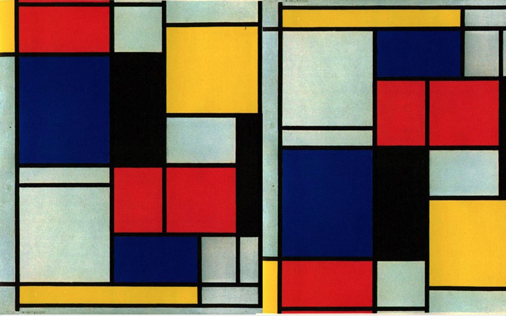
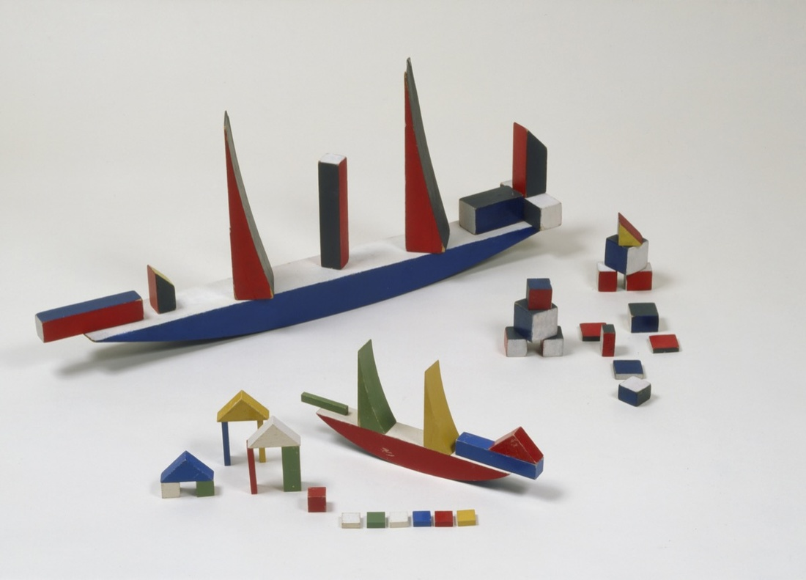
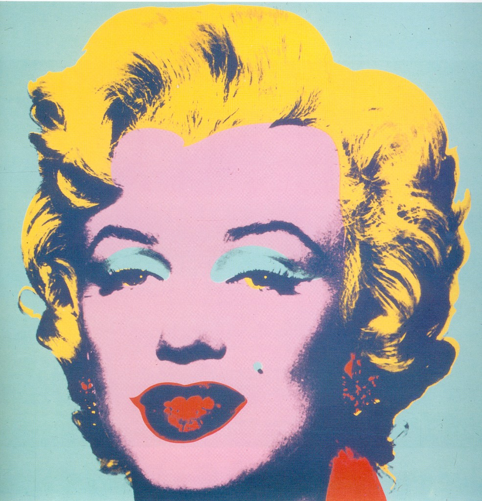
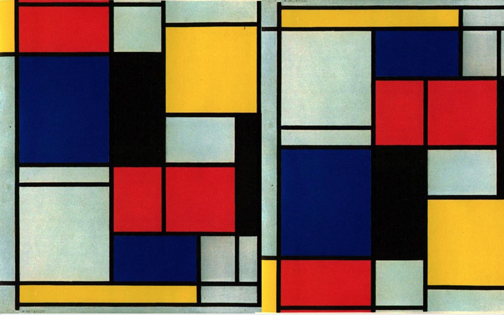
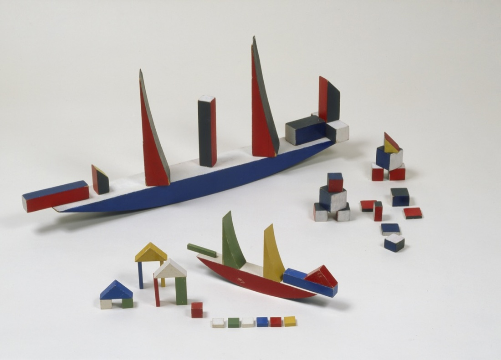
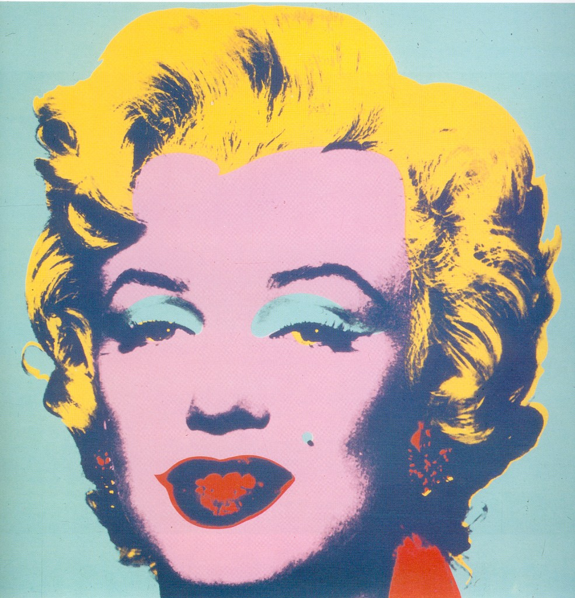

This library guide is focused on books about key avant-garde movements and practices.We have selected the most popular books under each category.For other art movements, full collection of books and other types of resources, please go to Monash library website
Click the bar to read more.We have selected some books for you to get a general overview of art movements. For more details of individual art movement, please check their own pages.
bookTitle
Author
Availability
Availability